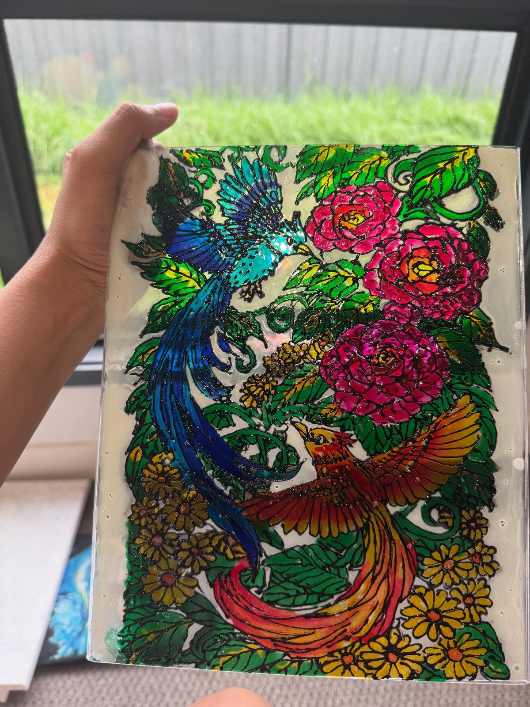
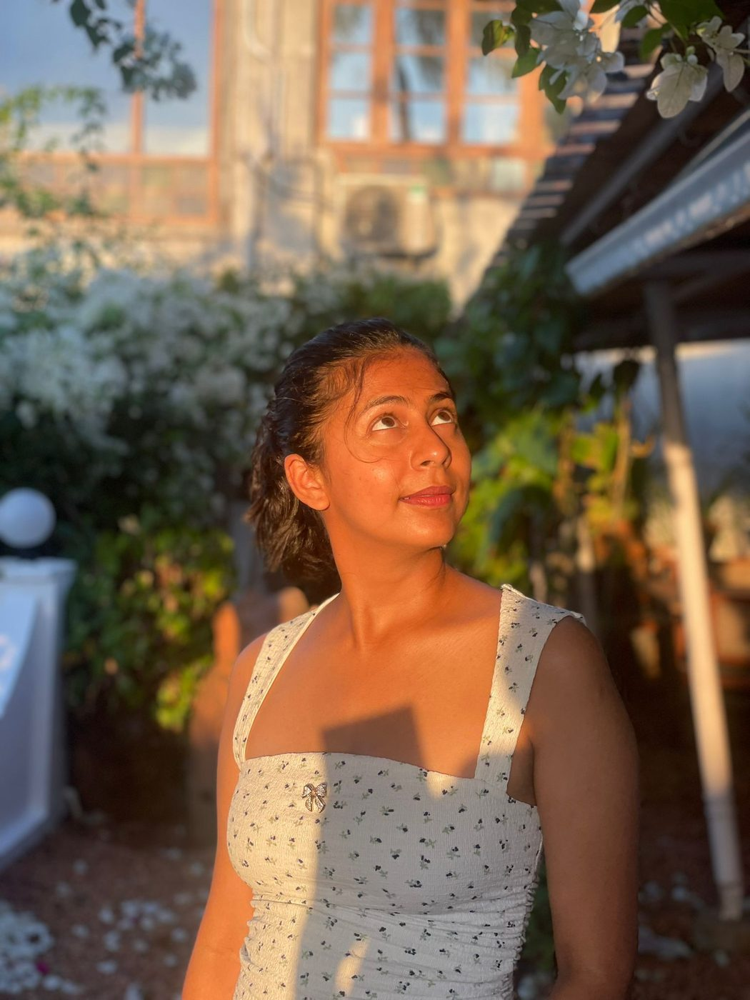

— three little doors
paintings, pours, and the occasional cat — kept here so the colours don't get lost in the scroll.


— fresh off the easel
drag sideways, or just let them drift →
— a note from the painter
— three little doors
 and then she started painting again.
and then she started painting again.
— how it begins
most pieces start as a colour stuck in her head. by the time the canvas is done her hands are usually louder than the painting.
the studio is small. the light is honest. the cat is nearby.
meet the painter— say hi
no shop, no commissions — just a small inbox kept open for kind words, questions, and quiet conversations about colour.